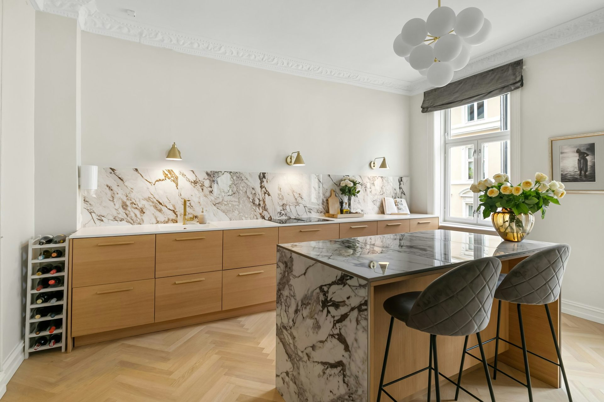
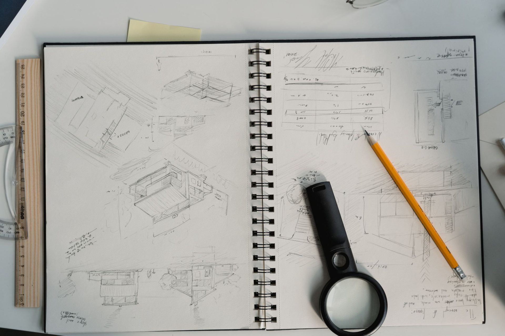
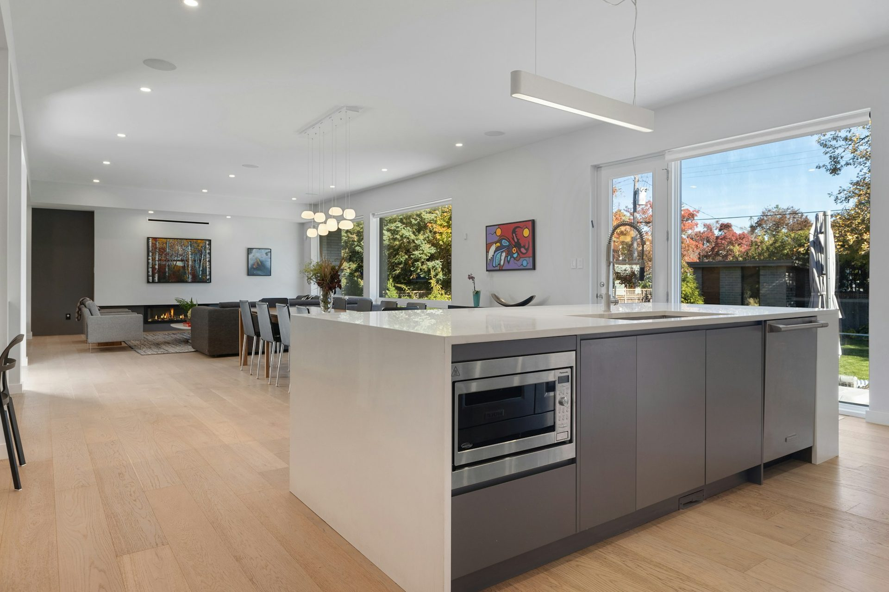

Flat pack kitchens
delivered to Kingscote.
Drawn to your room in Rockhampton and freighted to Kingscote, flat packed or delivered assembled. Same board, same Blum hardware, same drawings as every kitchen we build.
The short answer
We supply Kingscote, we do not install there. The cabinetry is cut to your wall lengths and ceiling height rather than selected from catalogue widths, then freighted west via the Sturt Highway as flat cartons or as assembled cabinets, whichever your quote compares better on. Specification is the same either way and the same in every state: 18mm moisture-resistant board, laser-bonded edging, Blum hinges and full-extension runners.

What does Kingscote housing do to a kitchen?
Salt air is relentless on hardware. It gets into unbranded runners and hinges and they stiffen, then sag, and the doors stop lining up. Every cabinet runs Blum soft-close hinges and full-extension runners as standard. Island and coastal freight adds a leg, which is exactly when flat cartons stop being a preference and start being the answer.
How does the kitchen get to Kingscote?
Your kitchen is cut in Rockhampton and freighted west via the Sturt Highway. Flat cartons are labelled to a numbered drawing, one per cabinet where possible, with doors and fronts wrapped separately and the Blum hardware bagged against the cabinet it belongs to. Assembled orders arrive as finished boxes, doors hung and adjusted, which takes more truck space and shows as a higher freight line. Both are on the same quote so the choice is a number rather than a guess.
Who fits it in Kingscote?
Your builder, carpenter or kitchen installer, plus a licensed plumber and a licensed electrician for their parts. Ask each for a licence number and check it yourself — in South Australia that is SA Consumer and Business Services. Every order ships with dimensioned service drawings showing each waste, water point and outlet, so the trades rough in to the plan rather than to a guess. Our install guide sets out the three trades and the fixed order they work in.
How do I compare this with a Kingscote cabinetmaker?
Take our itemised quote to any Kingscote cabinetmaker and compare it line for line, which is exactly what it is formatted for. Ask them three things: board thickness and moisture rating, edging method, hardware brand. If the answers match ours and the number is better, take theirs - a local supplier with the same specification and no freight line is a genuinely good outcome. If the answers are vague, you have learned something either way.
Can you match something I have already seen?
Usually, if what you like is the door, the colour and the proportion rather than a specific brand's product. Send photographs with the quote request and say what it is you are responding to in them, because that is more useful than a style name. Our styles guide works through the eighteen looks people ask for most and what each one actually needs.
Do I supply the appliances, or do you?
Most Kingscote orders come with the appliances already chosen, and that is the easier way round. Send us the model numbers, or the cut-out dimensions from the spec sheet, and the cabinets are cut to take them. If you would rather we supplied them, they are quoted as their own lines. What does not work is guessing: a 900mm cooktop in a cabinet cut for 600mm is a new cabinet, not an adjustment.
Where else do you ship in the Fleurieu and Kangaroo Island?
We ship to Goolwa, Normanville, Port Elliot, Middleton, Yankalilla on the same route. The the Fleurieu and Kangaroo Island page covers the region, and South Australia covers the state.
- Drawn to your measurements, not catalogue widths
- 18mm moisture-resistant board, laser-bonded edging
- Blum soft-close hinges and full-extension runners
- Pre-drilled and labelled per cabinet
- Service drawings for your plumber and electrician
- Fixed itemised quote, freight its own line
- Installation not offered in Kingscote
Kitchenettes for a granny flat, studio or short-stay unit start at $4,500 — see flat pack kitchenettes.
Building a second dwelling? Granny flat rules in South Australia.
The specification
Built for this
climate, not a catalogue.
Cold mornings and hot afternoons in the same day are hard on a cabinet. Materials expand and contract, glued edging works loose at the corners, and doors drift out of alignment. A fused edge and three-way adjustable Blum hinges are the answer to both halves of that.
The same three questions decide any kitchen anywhere: board thickness and moisture rating, edging method, hardware brand. Ours are 18mm moisture-resistant, laser-bonded and Blum, and they are printed on every quote. How to judge a flat pack.
- 18mm moisture-resistant board
- Laser-bonded edging, no glue line
- Blum soft-close hinges and runners
- Cut to your drawing, not catalogue widths
- Pre-drilled and labelled per cabinet
- Fixed itemised quote, freight its own line
No showroom. No account.
A person draws it.
Send the wall lengths, the ceiling height and a photo of each corner. A designer draws your kitchen to the room and sends the drawing back with a fixed, itemised quote — flat packed and delivered assembled, freight to your postcode on each.
- Nothing to pay to see the drawing or the quote
- Changes redrawn until the plan is right
- Cut only after you sign the drawing off
- Freight quoted as its own line, never folded in
Or call 0401 821 848 — you get the person who designs it.
Frequently asked
Kingscote — questions
If your question is not here, call the studio. We would rather talk it through than have you guess.
Ask us directly →Do you deliver flat pack kitchens to Kingscote?
Yes. Kingscote is served west via the Sturt Highway, and freight is quoted to your postcode as its own line on the quote rather than folded into the cabinetry price.
Do you install kitchens in Kingscote?
No. Our own installation team works Central Queensland only. In Kingscote your builder, carpenter or kitchen installer fits it, working from the dimensioned service drawings that ship with every order. Our install guide covers the three trades and the order they work in.
Should I order flat pack or assembled to Kingscote?
Both are quoted on the same drawing. Flat cartons ship for less and get through tight doorways; assembled arrives with carcasses built and doors adjusted so your installer is fitting rather than building. Over this distance most the Fleurieu and Kangaroo Island orders go flat.
Who can do the plumbing and electrical in Kingscote?
A licensed plumber and a licensed electrician, and you should check both licences yourself before they start. In South Australia, SA Consumer and Business Services is the register to check against.
What board and hardware do you use?
18mm moisture-resistant board, laser-bonded edging and Blum soft-close hinges and runners on every cabinet, in every state. The specification is printed on your quote so you can hold it against anything else you are offered.
How long will a Kingscote order take?
It depends on the kitchen and the freight route, so it is stated on your quote for your job rather than guessed here. What you can plan around is the sequence: drawing, your sign-off, cutting, then freight.
Delivered assembled
The assembly is done
before it arrives.
Carcasses built square on a bench, Blum hardware fitted, doors hung and adjusted to even gaps. On site you are fixing finished cabinets to a wall, not building them on the floor. Your builder or installer levels it, fixes it and fits the benchtop, working from our drawings. Prefer to build it yourself? The same kitchen ships flat pack.

Service drawings for your trades

Appliance garage, hardware fitted before delivery

A long run arrives as numbered assembled units
Kingscote, SA
Send us the dimensions.
We will send back a number.
A fixed, itemised quote for your Kingscote kitchen, flat packed and delivered assembled, with freight to your postcode on each. Nothing to pay to see it.